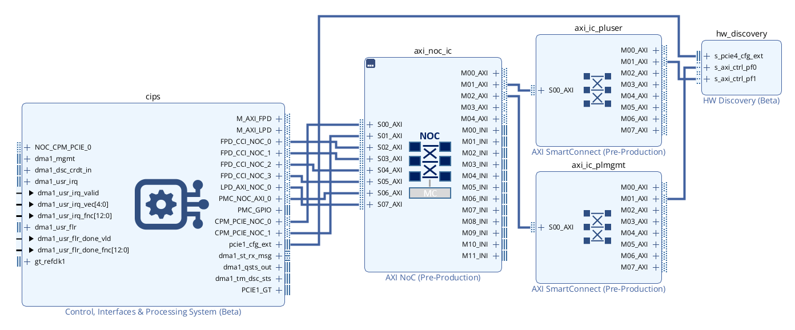
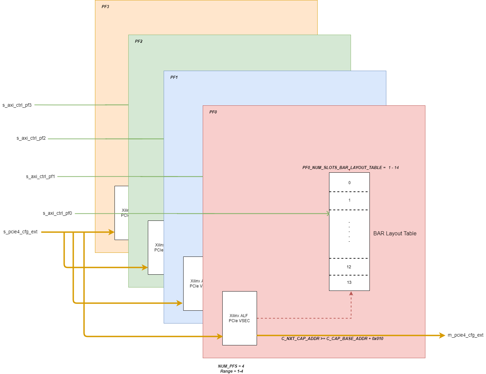

Hardware Discovery IP v1.0 - Product Guide¶
Overview¶
IP name: hw_discovery_v1_0
The AMD Versal™ Hardware Discovery IP constructs PCIe® BAR layout tables that enumerate all the PCIe endpoints found on each physical function (PF) in the system, along with information needed for accessing each endpoint. The IP also supports a vendor specific extended capability (VSEC) interface that connects to PCIe block of Versal devices to indicate the memory-mapped location of each of the BAR layout tables. During run-time, host software can interrogate the BAR layout tables via the control network for each PCIe PF to determine all the hardware endpoints that need to be accessed and their locations. The Hardware Discovery IP has the following main functions:
Implements AMD-Xilinx Additional List of Features (ALF) VSEC for each physical function. This function provides the PCIe-BAR location of the BAR Layout Table.
BAR Layout Table. Contains information to identify endpoints, e.g. UUID ROM, GCQ.
Features¶
The Versal Hardware Discovery IP has the following main features:
Supports up to 4 physical functions, as illustrated in the block diagram below.
Supports up to 14 PCIe endpoints in the Bar Layout Table for each physical function.
Supports daisy-chaining additional VSEC modules by indicating their next capability address.
Applications¶
The Hardware Discovery IP provides an AXI4-Lite slave control interface for each enabled PF. The IP also has an ALF VSEC slave interface that connects to the Versal PCIe block.

Architecture Overview¶
The following diagram shows the overall structure of the Hardware Discovery IP.

Resource Use¶
The table below contains resource utilization data for several configurations of the Hardware Discovery IP core. Any configuration parameters that are not listed have their default values; any parameters with a blank value are disabled or set automatically by the IP core.
Resource figures are taken from the utilization report issued at the end of implementation using the Out-of-Context flow in the AMD Vivado™ Design Suite.
Default Vivado Design Suite 2023.2 settings were used. You may be able to improve on these figures using different settings. Because surrounding circuitry will affect placement and timing, no guarantee can be given that these figures will be repeatable in a larger design.
Vivado Release |
Family |
Device |
Package |
Speedgrade |
Configuration Name |
C_MANUAL |
C_NUM_PFS |
C_CAP_BASE_ADDR |
C_NEXT_CAP_ADDR |
C_PFx_NUM_SLOTS_BAR_LAYOUT_TABLE |
Fixed Clocks (MHz) |
LUT |
FF |
DSP |
36k BRAMs |
18k BRAMs |
2023.2 |
versal |
xcv80 |
lsva4737 |
2MHP |
hwd_max_filled_nca_conf_1 |
1 |
4 |
0x480 |
0x600 |
14 |
aclk_ctrl=250
|
250 |
473 |
0 |
0 |
0 |
2023.2 |
versal |
xcv80 |
lsva4737 |
2MHP |
hwd_max_filled_nonca_conf_1 |
1 |
4 |
0x480 |
0x000 |
14 |
aclk_ctrl=250
|
231 |
381 |
0 |
0 |
0 |
Interface Descriptions¶
The table below gives an overview of the external interfaces and ports super-set present on the boundary of the Versal Hardware Discovery IP.
Name |
Type |
Mode/Direction |
Range |
Clock Domain |
Enablement Dependency |
Description |
|---|---|---|---|---|---|---|
PCIe Configuration |
||||||
s_pcie4_cfg_ext |
pcie3_cfg_ext |
Slave |
aclk_pcie |
true |
PCIe Configuration Extend Interface - Refer to the PCIe Product Guide (PG213) for more information. |
|
m_pcie4_cfg_ext |
pcie3_cfg_ext |
Master |
aclk_pcie |
Automatically enabled if C_NEXT_CAP_ADDR >= (C_CAP_BASE_ADDR + 0x010) |
PCIe Configuration Extend Interface - Refer to the PCIe Product Guide (PG213) for more information. |
|
AXI-Lite Control |
||||||
s_axi_ctrl_pf0 |
aximm_rtl (AXI4LITE) |
Slave |
aclk_ctrl |
NUM_PFS >= 1 |
AXI4-Lite Slave Control Interface |
|
s_axi_ctrl_pf1 |
aximm_rtl (AXI4LITE) |
Slave |
aclk_ctrl |
NUM_PFS >= 2 |
AXI4-Lite Slave Control Interface |
|
s_axi_ctrl_pf2 |
aximm_rtl (AXI4LITE) |
Slave |
aclk_ctrl |
NUM_PFS >= 3 |
AXI4-Lite Slave Control Interface |
|
s_axi_ctrl_pf3 |
aximm_rtl (AXI4LITE) |
Slave |
aclk_ctrl |
NUM_PFS = 4 |
AXI4-Lite Slave Control Interface |
|
Clocks |
||||||
aclk_pcie |
clk |
Input |
scalar |
true |
250MHz PCIe User Clock |
|
aclk_ctrl |
clk |
Input |
scalar |
true |
Control Clock |
|
Resets |
||||||
aresetn_pcie |
rst |
Input |
scalar |
aclk_pcie |
true |
Active-Low Reset associated with aclk_pcie |
aresetn_ctrl |
rst |
Input |
scalar |
aclk_ctrl |
true |
Active-Low Reset associated with aclk_ctrl |
Clocking¶
The Versal Hardware Discovery IP operates on two clock domains:
aclk_ctrl - Control clock
IP connected to the s_axi_ctrl_pfx are clocked on this domain.
aclk_pcie - 250MHz PCIe clock which clocks:
PCIe Configuration Extend Interface
By default, IP connected to the PCIe Configuration Extend Interface is clocked on this domain.
Resets¶
There are two reset sources for the Versal Hardware Discovery IP:
aresetn_ctrl - The control reset, synchronous to aclk_ctrl, active low polarity
resets all logic associated with aclk_ctrl
aresetn_pcie - The PCIe reset, synchronous to aclk_pcie, active low polarity
resets all logic associated with aclk_pcie
Interrupts¶
N/A
Register Space¶
Address Map for BAR Layout Tables¶
The following address map applies to each enabled PF (0<=p<C_NUM_PFS). Registers are accessed via the s_axi_ctrl_pfp interface.
Within each PF, there is a set of registers for each slot (0<=n<C_PFp_NUM_SLOTS_BAR_LAYOUT_TABLE)
Register |
Offset |
Access |
Fields |
Header word 0 |
0x0 |
RO |
Bits [19:0]: Format ID = 0x1 (constant)
|
Header word 1 |
0x4 |
RO |
Bits [31:0]: Length = 0x30 (constant) |
Header word 2 |
0x8 |
RO |
Bits [7:0]: Entry Size = 0x10 (constant) |
Slot n word 0 |
0x10 + n*0x10 |
RO |
Bits [7:0]: Type
|
Slot n word 1 |
0x14 + n*0x10 |
RO |
Bits [31:0]: Offset[47:16] |
Slot n word 2 |
0x18 + n*0x10 |
RO |
Bits [7:0]: Version Type
|
Detailed Description¶
The sections below provide an overview of the connectivity and configuration of the Versal Hardware Discovery IP.
PCIe VSEC¶
Versal Hardware Discovery IP includes a PCIe vendor specific extended capability (VSEC) structure within the extended configuration space of the PCIE IP. This VSEC implements the Xilinx Additional List of Features structure that includes a pointer to the head of a memory-mapped BAR Layout Table outlining available peripherals and their address offsets.
The Xilinx ALF VSEC exists externally to the PCIE IP and is implemented using Hardware Discovery IP, and optionally other fabric-based IP, that connects using the PCIE pcie4_cfg_ext interface.
The structure of the Management ALF VSEC is outlined in the diagram below.
Note: The BAR Layout Table start address pointer within the ALF VSEC is 16-byte granular.
Command and Data Transfers¶
VSECs local to this IP are accessed when s_pcie4_cfg_ext_register_number points to a location within the range C_CAP_BASE_ADDR/4 to C_CAP_BASE_ADDR/4+3. In that case, read responses driven on s_pcie4_cfg_ext_read_data* are generated by the local VSEC tables.
VSECs residing in a device connected to the m_pcie4_cfg_ext interface are accessed when s_pcie4_cfg_ext_register_number points to a location >= C_NEXT_CAP_ADDR, provided C_NEXT_CAP_ADDR is non-zero. In that case, read responses from the connected device (m_pcie4_cfg_ext_read_data*) are propagated from the m_pcie4 to s_pcie4 interface. Furthermore, it is required that the connected downstream device respond to all read requests.
When s_pcie4_cfg_ext_register_number points to a location outside of the 16-byte range starting at C_CAP_BASE_ADDR, and either C_NEXT_CAP_ADDR==0 or s_pcie4_cfg_ext_register_number points to a location below C_NEXT_CAP_ADDR, then this IP completes read requests with s_pcie4_cfg_ext_read_data driven to all-zeroes (the m_pcie4 interface is ignored).
Whenever the IP is configured with C_NEXT_CAP_ADDR != 0, all in-bound information received on s_pcie4_cfg_ext is propagated to m_pcie4_cfg_ext, even though read responses on m_pcie4_cfg_ext only get propagated back when the command’s s_pcie4_cfg_ext_register_number points to a location >= C_NEXT_CAP_ADDR. When C_NEXT_CAP_ADDR == 0. No information is transmitted to the m_pcie4_cfg_ext interface.
Endpoint Names¶
For each PF, the user parameter C_PFx_ENDPOINT_NAMES defines a list of endpoints to be supported by the IP when configured for automatic metadata propagation (C_MANUAL=0). For each of the corresponding endpoints entered into the BAR Layout Table, the sub-fields of C_PFx_ENDPOINT_NAMES defines the ENTRY_TYPE and ENTRY_RSVD0 values to populate each entry in the table. During metadata propagation, which occurs when the Vivado IP-Integrator Block Design is validated, discovered endpoints listed in the C_PFx_ENDPOINT_NAMES parameters are captured in the BAR Layout tables. Any non-listed endpoints returned from the system are ignored. If any of the listed endpoint are not found during propagation, the Hardware Discovery IP issues an error. If no endpoints are discovered for any enabled PF, the Hardware Discovery IP issues an error. These parameters must be set manually for each enabled PF.
The C_PF0_ENDPOINT_NAMES parameter is a string formatted as a TCL dictionary of the following structure:
endpoint_name {type 0xnn reserve 0x} …
There are two techniques commonly used to construct dictionary values in TCL:
Option 1: Set entire property string:
Option 2: Property dictionary read-modify-write:
Example:
Endpoint Injection¶
The endpoint injection string (C_INJECT_ENDPOINTS) is an advanced parameter that can be used for stand-alone IP test or for system debug when API results are missing or unexpected. An endpoint injection string can optionally be specified to override the endpoint metadata values normally returned by system API calls. The parameter C_INJECT_ENDPOINTS is a string formatted as a tcl dictionary comprising 3 top-level keys:
pcie_mapping_info: value string normally returned by the vitis::get_pcie_mapping_info API call.
endpoints_for_pcie_bar: value string normally returned by the vitis::get_endpoints_for_pcie_bar API call.
pcie_mapping_for: value string normally returned by the vitis::get_pcie_mapping_for API call.
The following BNF formal syntax defines the required format of the value of the C_INJECT_ENDPOINTS parameter. As braces ({}) are part of tcl syntax, they are to be interpreted literally. Optional repetition is instead indicated using ellipses (…).
C_INJECT_ENDPOINTS_value ::= pcie_mapping_info { pf_list } endpoints_for_pcie_bar { endpoint_collection_dictionary } pcie_mapping_for { interfaces_dictionary }
pf_list ::= { pf_dictionary }…
pf_dictionary ::= physical_function pf_number bar bar_number
endpoint_collection_dictionary ::= pf_pair…
pf_pair ::= pf_number { bar_pair… }
bar_pair ::= bar_number { endpoint_list }
endpoint_list := { endpoint_dictionary }…
endpoint_dictionary ::= intf bd_interface_pin offset address xrt_endpoint_name endpoint_name reg_abs { vlnv }
bd_interface_pin ::= /bd_cell_instance_name/interface_pin_name
address ::= 0xhex_value
vlnv ::= vendor_url:library:ip_name:major_version.minor_version
interfaces_dictionary ::= interface_pair…
interface_pair ::= bd_interface_pin { pf_list }
In addition to all endpoints intended to populate the bar layout tables, the endpoints corresponding to the enabled s_axi_ctrl_pf* interfaces of the hw_discovery IP instance are also to be listed under endpoints_for_pcie_bar. For every endpoint_dictionary listed under endpoints_for_pcie_bar, its physical_function and bar values must also be listed under pcie_mapping_for, along with its corresponding bd_interface_pin, and under pcie_mapping_info.
The unrolled (informal) syntax of the C_INJECT_ENDPOINTS value is as follows. Square-brackets ([]) denote optionally-repeated elements. Line-end escape characters [\] are not normally used to define the string value, but are shown below for clarity.
pcie_mapping_info { { physical_function pf_number1 bar bar_number1 } [{ physical_function pf_number2 bar bar_number2 }]… } \
endpoints_for_pcie_bar { pf_number1 { bar_number1 { { intf bd_interface_pin1 offset address1 xrt_endpoint_name endpoint_name1 reg_abs { vlnv1 } } [{ intf bd_interface_pin2 offset address2 xrt_endpoint_name endpoint_name2 reg_abs { vlnv2 } }]… } } \
[pf_number2 { bar_number2 { { intf bd_interface_pin3 offset address3 xrt_endpoint_name endpoint_name3 reg_abs { vlnv3 } } [{ intf bd_interface_pin4 offset address4 xrt_endpoint_name endpoint_name4 reg_abs { vlnv4 } }]… } }]… } \
pcie_mapping_for { bd_interface_pin1 { { physical_function pf_number1 bar bar_number1 } [{ physical_function pf_number2 bar bar_number2 }]… } [bd_interface_pin2 { { physical_function pf_number3 bar bar_number3 } [{ physical_function pf_number4 bar bar_number4 }]… }]… }
Here is an example of a properly formatted C_INJECT_ENDPOINTS string (line-end escapes shown for clarity):
pcie_mapping_info { { physical_function 0 bar 2 } { physical_function 1 bar 3 } } \
endpoints_for_pcie_bar { 0 { 2 { { intf /hw_discovery_0/s_axi_ctrl_pf0 offset 0xF0DD0000 xrt_endpoint_name hwd_00 reg_abs { xilinx.com:ip:hw_discovery:1.0 } } \
{intf /mailbox_mgmt_00_0/s_axi offset 0x123456789A xrt_endpoint_name ep_mailbox_mgmt_00 reg_abs { xilinx.com:ip:mailbox_mgmt:8.9 } } \
{intf /rpu_sq_pi_0/s_axi offset 0x23456789AB xrt_endpoint_name ep_xgq_mgmt_to_rpu_sq_pi_00 reg_abs { xilinx.com:ip:rpu_sq_pi:8.9 } } } } \
1 { 3 { { intf /hw_discovery_0/s_axi_ctrl_pf1 offset 0xF1DD0000 xrt_endpoint_name hwd_00 reg_abs { xilinx.com:ip:hw_discovery:1.0 } } \
{intf /mailbox_user_0/s_axi offset 0xFEDCBA9876 xrt_endpoint_name ep_mailbox_user_00 reg_abs { xilinx.com:ip:mailbox_user:8.9 } } } } } \
pcie_mapping_for { /hw_discovery_0/s_axi_ctrl_pf0 { { physical_function 0 bar 2 } } /hw_discovery_0/s_axi_ctrl_pf1 { { physical_function 1 bar 3 } } }
NOTE: If there are any format or object-name errors in C_INJECT_ENDPOINTS or any C_PFx_ENDPOINT_NAMES parameter values, the most common symptom is the error “ERROR: [BD 41-1273] Error running pre_propagate TCL procedure: missing value to go with key.”
Table Formats¶
VSEC Tables¶
{kind=link}
The structure of the User ALF VSEC is outlined in the diagram below.
Note: The BAR Layout Table start address pointer within the ALF VSEC is 16-byte granular.
{kind=link}
Management BAR Layout Table¶
The structure of the Management BAR Layout Table is outlined in the diagram below. The ordering of entries within the BAR Layout Table are illustrative only and may not match the hardware implementation, software should traverse the table and compare the Type ID for the entry of interest.
Note: The endpoint address offsets within the BAR Layout Table are byte granular.
{kind=link}
User BAR Layout Table¶
The structure of the User BAR Layout Table is outlined in the diagram below. The ordering of entries within the BAR Layout Table are illustrative only and may not match the hardware implementation, software should traverse the table and compare the Type ID for the entry of interest.
Note: The endpoint address offsets within the BAR Layout Table are byte granular.
{kind=link}
Customizing and Generating the IP¶
This section includes information about using AMD tools to customize and generate the Hardware Discovery IP using the AMD Vivado™ Design Suite.
If you are customizing and generating the IP in the Vivado IP integrator, see the Vivado Design Suite User Guide: Designing IP Subsystems using IP Integrator(UG994) for detailed information.
Importing the IP Repository¶
The Hardware Discovery IP is delivered as a standalone IP repository that can be imported for use within Vivado Design Suite. Refer to the Vivado Design Suite User Guide: Designing with IP(UG896) for detailed information on adding an external IP repository to a project.
Customizing the IP¶
You can customize the IP for use in your design by specifying values for the various user parameters associated with the IP using the following steps:
Select the IP from the IP catalog.
Double-click the selected IP or select the Customize IP command from the toolbar or right-click menu.
Component Name¶
The Component name is used as the name of the top-level wrapper file for the core. The underlying netlist still retains its original name. Names must begin with a letter and must be composed from the following characters: a through z, 0 through 9, and “_”. The default is hw_discovery_0.
Output Generation¶
For detailed information on generating IP output products, please refer to the Vivado Design Suite User Guide: Designing with IP (UG896).
Parameters¶
` </plugins/servlet/confluence/editinword/1111914092/attachments/ipTables.xlsx>`__
User Parameter |
Model Parameter |
Model Param Format / Range |
Default |
Populated |
Display Name |
Description |
C_MANUAL |
n/a |
integer = {0,1} |
1 |
Explicit |
Manually Configure |
0 = Populate all endpoint data (indicated as Populated=Auto) automatically, either from system API calls or from endpoint injection parameter (C_INJECT_ENDPOINTS); 1 = Set all endpoint data manually. |
C_NUM_PFS |
C_NUM_PFS |
integer = {1..4} |
1 |
Explicit |
Number of PFs |
Configure number of Physical Functions. |
C_CAP_BASE_ADDR |
C_CAP_BASE_ADDR |
bitString(12) |
0x000 |
Explicit |
PCIe Extended Capability Base Address |
Base address to access VSECs VSECs local to this IP are accessed when s_pcie4_cfg_ext_register_number points to a location within the range C_CAP_BASE_ADDR/4 to C_CAP_BASE_ADDR/4+3. |
C_NEXT_CAP_ADDR |
C_NEXT_CAP_ADDR |
bitString(12) |
0x000 |
Explicit |
Next Capability Pointer |
|
C_INJECT_ENDPOINTS |
n/a |
String (tcl dictionary, see below) |
(null) |
Explicit |
Inject Endpoint Info for Test |
|
Parameters Per PF Instance (C_NUM_PFS), where 0<=x<=3 |
||||||
C_PFx_NUM_SLOTS_BAR_LAYOUT_TABLE |
C_PF0_NUM_SLOTS_BAR_LAYOUT_TABLE |
integer = {1..14} |
1 |
Auto |
Number of Bar Layout Table Entries for PFx |
|
C_PFx_BAR_INDEX |
C_PFx_BAR_INDEX |
integer = {0..6} |
0 |
Auto |
PFx BAR Index |
PFx BAR Index |
C_PFx_LOW_OFFSET |
C_PFx_LOW_OFFSET |
bitString(28) |
0x0000_000 |
Auto |
PFx BAR Layout Table Low Address Offset |
PFx BAR layout table offset - lower bits (31:4) |
C_PFx_HIGH_OFFSET |
C_PFx_HIGH_OFFSET |
bitString(32) |
0x0000_0000 |
Auto |
PFx BAR Layout Table High Address Offset |
PFx BAR layout table offset - higher bits (64:32) |
C_PFx_ENDPOINT_NAMES |
n/a |
String (tcl dictionary, see below) |
(null) |
Explicit |
PFx List of Endpoint Names |
|
Parameters Per BAR Layout Entry (C_PFx_NUM_SLOTS_BAR_LAYOUT_TABLE), where 0<=n<=13 |
||||||
C_PFx_ENTRY_TYPE_n |
C_PFx_ENTRY_TYPE_n |
bitString(8) |
0x00 |
Auto |
PFx Table Entry n Type |
The Type field identifies what entry type can be found at the offset specified. Below is an example of the endpoint types used on PF0 in the Alveo Versal Example Design: 0x50 UUID0 ROM 0x54 GCQ 0x55 AXI NoC IP remapper 0x56-5F Reserved |
C_PFx_ENTRY_BAR_n |
C_PFx_ENTRY_BAR_n |
integer = {0..6} |
0 |
Auto |
PFx Table Entry n BAR |
BAR number where the endpoint is located. |
C_PFx_ENTRY_ADDR_n |
C_PFx_ENTRY_ADDR_n |
bitString(48) |
0x0000_0000_0000 |
Auto |
PFx Table Entry n Address |
Endpoint address offset from the PCIe BAR identified in the BAR field. |
C_PFx_ENTRY_MAJOR_VERSION_n |
C_PFx_ENTRY_MAJOR_VERSION_n |
integer = {0..255} |
0 |
Auto |
PFx Table Entry n Major Version |
Major version of the endpoint. |
C_PFx_ENTRY_MINOR_VERSION_n |
C_PFx_ENTRY_MINOR_VERSION_n |
integer = {0..255} |
0 |
Auto |
PFx Table Entry n Minor Version |
Minor version of the endpoint. |
C_PFx_ENTRY_VERSION_TYPE_n |
C_PFx_ENTRY_VERSION_TYPE_n |
bitString(8) |
0x00 |
Auto |
PFx Table Entry n Version Type |
Indicates how the Major/Minor version fields should be interpreted. Currently defined values are: 0x0 - IP Catalog Version 0x1 - Register Abstraction Version |
C_PFx_ENTRY_RSVD0_n |
C_PFx_ENTRY_RSVD0_n |
bitString(4) |
0x0 |
Auto |
PFx Table Entry n Reserved Field 0 |
Reserved - Note: Some entry types define additional fields in these bits, see sections below. |
AXI interface configuration per PF Instance (C_NUM_PFS) |
||||||
C_PFx_S_AXI_ADDR_WIDTH |
C_PFx_S_AXI_ADDR_WIDTH |
integer={1..64} |
32 |
Explicit |
PFx AXI Interface Address Width |
Width of {s,m}_axi_{r,w}addr |
Simulation¶
For comprehensive information about Vivado simulation components, as well as information about using supported third-party tools, see the Vivado Design Suite User Guide: Logic Simulation(UG900).
Synthesis and Implementation¶
For details about synthesis and implementation, see the Vivado Design Suite User Guide: Designing with IP (UG896).
Driver¶
Please refer to AMI Architecture for details on the software driver and interactions with the Hardware Discovery IP.
Example Design¶
The hw_discovery IP supports example-design generation. The exdes is generated as an IPI BD with the DUT configured to match the original instance configuration. The exdes also connects AXI VIPs to all enabled s_axi_ctrl_pf* ports. An accompanying testbench drives the VIPs to interrogate all populated slots of all BAR layout tables and match the read values against the original config.
The original IP can be configured:
in a Vivado IPI BD (stand-alone): the default instance name is “hw_discovery_0”.
in a platform, where the BD script (partition.tcl) defines the instance name.
If the IP is configured for automatic metadata propagation (C_MANUAL=0), then C_INJECT_ENDPOINTS and all enabled C_PFn_ENDPOINT_NAMES parameters must be specified. That is because the DUT in the exdes is simulated stand-alone; there is no system-level metadata to be propagated.
IMPORTANT: If the IP is configured for automatic, then the instance name of the DUT in the generated example design must match that of the original instance from which it was generated. That is because the interface names in C_INJECT_ENDPOINTS contain the instance name. Generating the exdes in an empty target location generally avoids any mismatch.
If the IP is generated in a platform and endpoint metadata was automatically propagated from the system, you can avoid concocting a C_INJECT_ENDPOINTS string by just switching the IP to manual (C_MANUAL=1) before generating the example design.
When generating the exdes in Vivado, just select the hw_discovery instance and run open_example_project. Once the exdes project opens, it is ready to run behavioral simulation (launch_simulation; run all).
Page Revision: v. 30